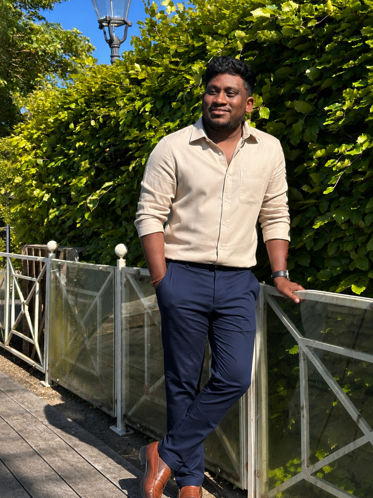

Finance · Mathematics · Technology · Author · Journalist
This is me!
Thinesh Navaratnam
My experience spans finance, NGOs, writing, and journalism. I’m now studying software development at HackYourFuture in Copenhagen, bringing an analytical mindset, communication skills, and curiosity about building useful things into my next chapter.
Read my storyProfessional experience
My experience spans finance, auditing, administration, logistics, and freight forwarding. My previous roles have given me a strong foundation in organisation, attention to detail, documentation, financial processes, and working with different teams.
I’m now combining this professional experience with new technical skills to build a career in software development.
My skills
HTML
Creating structured and accessible web pages
CSS
Styling websites and creating responsive layouts
JavaScript
Learning programming and adding interactivity to websites
Git & GitHub
Version control, branches, commits, and pull requests
Web Development
Building responsive and user-friendly websites
Problem Solving
Analytical thinking and finding practical solutions
Finance & Accounting
Financial management, accounting, and auditing
Administration
Documentation, organisation, and coordination
Teamwork & Communication
Working effectively with colleagues and teams
Degrees & Certifications
Degrees
- BSc in Mathematics
- Chartered Institute of Management Accountants
Current Study
- Software Developer ProgramHackYourFuture · Copenhagen, Denmark · Currently studying
My interests
- Web Development & Technology
- Mathematics & Problem Solving
- Finance, Accounting & Business
- Learning New Skills
- Building Practical Digital Solutions
My goal is to continue developing my programming skills, build real-world projects, and grow into a professional software developer.
Stories, ideas, and the people who read them.
I have a strong interest in writing books, developing stories, and writing articles for newspapers. I enjoy expressing ideas through writing, exploring different topics, and sharing stories with readers.
My interest in journalism has helped me develop my communication, research, and storytelling skills.
- Books & story development
- Newspaper articles
- Research & communication